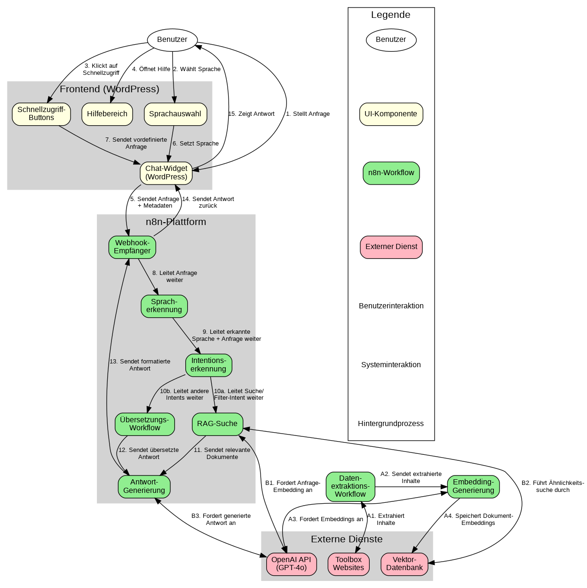

Übersicht
Diese interaktive Dokumentation bietet eine umfassende visuelle Darstellung des MVP (Minimum Viable Product) für den KI-gestützten Chatbot zur Navigation der Toolbox Agenda 2030. Die Visualisierungen umfassen die Systemarchitektur, den Datenfluss, die Benutzeroberfläche und die Komponenteninteraktionen.
Hauptmerkmale des MVP-Chatbots
- Open-Source-Technologie: Basierend auf n8n als Workflow-Automatisierungsplattform
- RAG-Funktionalität: Retrieval Augmented Generation für präzise, kontextbezogene Antworten
- Mehrsprachigkeit: Unterstützung aller Schweizer Landessprachen (DE, FR, IT) und Englisch
- WordPress-Integration: Nahtlose Einbindung als Widget in bestehende Toolbox-Websites
- Barrierefreiheit: Entwickelt nach modernen Accessibility-Standards
1. Architekturdiagramm
Das Architekturdiagramm zeigt die Hauptkomponenten des Chatbot-Systems und deren Beziehungen zueinander. Es bietet einen Überblick über die technische Struktur des MVP.
Abbildung 1: Architekturdiagramm mit Benutzeroberfläche, n8n-Workflows und externen Diensten
Hauptkomponenten:
- Benutzeroberfläche: Chat-Widget, Sprachauswahl, Schnellzugriff-Buttons und Hilfebereich
- n8n-Workflows: Webhook-Empfänger, Initialisierungs-Workflow, Intentionserkennung, RAG-Komponente und Mehrsprachigkeitsmanagement
- Externe Dienste: OpenAI API (GPT-4o), Vektor-Datenbank für Embeddings und die Toolbox Agenda 2030 Websites
2. Datenflussdiagramm
Das Datenflussdiagramm visualisiert, wie Daten durch das System fließen, von der Benutzeranfrage bis zur Antwortgenerierung. Es zeigt die sequentielle Verarbeitung und Transformation der Daten.
Abbildung 2: Datenflussdiagramm mit nummerierten Verarbeitungsschritten
Hauptdatenflüsse:
- Benutzeranfrage: Der Benutzer stellt eine Frage über das Chat-Widget
- Spracherkennung und Intentionserkennung: Die Anfrage wird analysiert, um die Sprache und die Intention zu erkennen
- RAG-Prozess: Bei Suchanfragen werden relevante Dokumente aus der Vektordatenbank abgerufen
- Antwortgenerierung: OpenAI generiert eine kontextbezogene Antwort basierend auf den relevanten Dokumenten
- Hintergrundprozesse: Extraktion von Inhalten aus den Toolbox-Websites und Generierung von Embeddings
3. Benutzeroberflächen-Mockup
Das UI-Mockup zeigt das Design und die Funktionalität des Chatbots aus Benutzerperspektive. Es demonstriert sowohl die Desktop- als auch die Mobile-Ansicht des Chatbots.
Abbildung 3: Benutzeroberflächen-Mockup mit Desktop- und Mobile-Ansicht
Hauptelemente:
- Chat-Widget: Mit Nachrichtenverlauf und Eingabefeld
- Sprachauswahl: Für alle Schweizer Landessprachen (DE, FR, IT) und Englisch
- Schnellzugriff-Buttons: Für häufige Fragen
- Hilfebereich: Mit Nutzungshinweisen
- Responsives Design: Optimiert für Desktop, Tablet und Smartphone
Barrierefreiheit
Die Benutzeroberfläche wurde unter Berücksichtigung von Barrierefreiheitsstandards entwickelt:
- Tastaturnavigation für alle Funktionen
- ARIA-Attribute für Screenreader-Kompatibilität
- Ausreichender Farbkontrast (WCAG AA-konform)
- Fokus-Indikatoren für Tastaturbenutzer
- Responsive Design für alle Geräte
4. Komponenteninteraktionsdiagramm
Das Komponenteninteraktionsdiagramm zeigt, wie die verschiedenen Komponenten des Systems miteinander interagieren. Es visualisiert die Kommunikationswege und Abhängigkeiten zwischen den Komponenten.

Abbildung 4: Komponenteninteraktionsdiagramm mit nummerierten Interaktionen
Hauptinteraktionen:
- Benutzerinteraktionen: Anfragen stellen, Sprache wählen, Schnellzugriff nutzen, Hilfe öffnen
- Frontend-Backend-Interaktionen: Übermittlung von Anfragen und Metadaten an n8n
- n8n-interne Interaktionen: Weiterleitung zwischen Workflows basierend auf erkannter Intention
- Datenverarbeitungsinteraktionen: Extraktion von Inhalten, Generierung von Embeddings, Ähnlichkeitssuche
- Antwortgenerierung: Erstellung kontextbezogener Antworten mit OpenAI und Rückgabe an den Benutzer
5. Implementierungshinweise
Für die Implementierung des MVP in Ihrer Umgebung sind folgende Schritte erforderlich:
-
n8n-Workflows importieren
Laden Sie die bereitgestellten Workflow-Definitionen in Ihre n8n-Instanz. Stellen Sie sicher, dass Ihre n8n-Instanz über das Internet erreichbar ist.
-
WordPress-Plugin installieren
Integrieren Sie das Chat-Widget in Ihre Toolbox-Websites. Verwenden Sie dazu das bereitgestellte WordPress-Plugin oder fügen Sie den HTML-Code direkt ein.
-
OpenAI API konfigurieren
Stellen Sie sicher, dass die API-Schlüssel korrekt eingerichtet sind und in den n8n-Umgebungsvariablen hinterlegt werden.
-
Datenextraktion durchführen
Führen Sie den Datenextraktions-Workflow aus, um Inhalte von den Toolbox-Websites zu extrahieren und zu indexieren.
-
Testen und Anpassen
Überprüfen Sie die Funktionalität des Chatbots mit verschiedenen Anfragen und nehmen Sie bei Bedarf Anpassungen vor.
6. Nächste Schritte
Nach der erfolgreichen Implementierung des MVP können folgende Erweiterungen in Betracht gezogen werden:
-
Verbesserung der thematischen Filterung
Präzisere Kategorisierung und Matching-Algorithmen für genauere Suchergebnisse.
-
Implementierung von Rückfragen
Bei unklaren Anfragen kann der Chatbot gezielt nachfragen, um die Benutzerintention besser zu verstehen.
-
Optimierung der Antwortzeit
Caching-Mechanismen für häufig gestellte Fragen und Optimierung der RAG-Workflows.
-
Erweiterung der Wissensbasis
Integration weiterer Quellen und Dokumente zur Verbesserung der Antwortqualität.
-
Nutzerfeedback-Mechanismus
Sammlung und Auswertung von Feedback zur kontinuierlichen Verbesserung des Chatbots.
Erfolgsmessung
Um den Erfolg des Chatbots zu messen, empfehlen wir die Überwachung folgender Kennzahlen:
- Anzahl der Benutzerinteraktionen
- Durchschnittliche Antwortzeit
- Anzahl der erfolgreichen vs. nicht erfolgreichen Anfragen
- Nutzerzufriedenheit (falls Feedback-Mechanismus implementiert)
- Verweildauer auf der Website vor und nach Implementierung des Chatbots